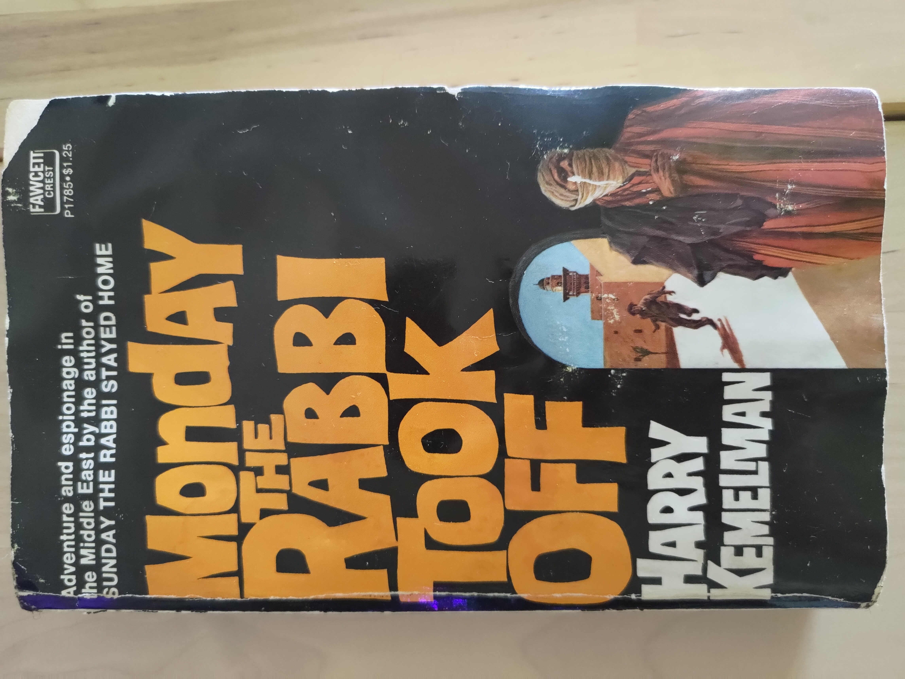

Book Reviews

Minecraft Travel Art Writings Book Reviews Videos
My Book Reviews
Frankenstein by Mary Shelley (1818)
Still reading!
Star Trek TNG: Here There Be Dragons by John Peel (1993)
Still reading!
Monday The Rabbi Took Off by Harry Kemelman (1972)
Review written 12/22/2025
Rating: 3/10
Monday The Rabbi Takes Off is the third in a series of mystery books starring the Rabbi David Small. It is very understandable as a stand-alone story and often I found myself forgetting that there was a backstory to it. Small takes a sabbatical to visit Israel, a place he has never been, as he contemplates his future: does he want to remain a rabbi to his loyal congregation, or retire to devote himself to personal research and relaxation. The story takes place in the present time, which in 1972 was only 5 years after the Six-Day War, and just 24 years after the founding of Israel. Rather late, about halfway through the book, there is an attack, and that is what the “mystery” revolves around.
Although this is intended to be a mystery novel, the primary conflict is within David Small himself and his self-discovery. Most of the story revolves around him moving around parts of Israel, and that is what makes the book intriguing. The reader gets a glimpse of what it was like living in Israel at the time, primarily in Jerusalem, from a Jewish Israeli point of view.
Alternating with Rabbi Small’s adventure, is the office politics of his congregation back home as they debate replacing him with a more “hip” and experienced Rabbi that the group has quickly grown fond of.
The “C-Plot” of the book, is the mystery itself. The elements of anti-Arab racism are prevalent in this plot line. This is in particular demonstrated by a minor character who is easily tricked by the antagonists because of his liberal Americanized idealism. Kemelman sanitizes the conflict of the time, and intentionally flattens the characters and motivations involved in the attack. The characters refer to all non-Israeli citizens only as Arabs, relying on stereotypes and generalizations to make a clear good-versus-bad dynamic, despite the occasional attempts at depth.
Ultimately, I did enjoy the book, but I don’t think most would. It’s a very slow burn, and the mystery portion of it is very dull. If you’re interested in seeing a romanticized “real life” of being Jewish in Israel in the early 70s, that would be it’s only redeeming aspect.